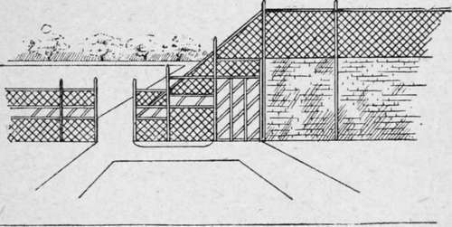

Chapter XX. Buying Trees, Climbers, Etc
Description
This section is from the book "Town Gardening", by Mary Hampden. Also available from Amazon: Town Gardening.
Chapter XX. Buying Trees, Climbers, Etc
From Whom to Buy. How to Order. Selections of Climbers for.
VV trees, or gaps filled up where trees have failed, a nurseryman with knowledge of the locality should be consulted. This does not necessarily mean a local nurseryman. Indeed, it is more advisable to inquire of one of the large firms of European fame, for then their experience will be combined with their ability to provide healthy, well-grown, and perhaps uncommon specimens. The suburban grower for sale seldom stocks more than a few species and varieties, which are, consequently, to be met with in all the local roads !
There is no reason why acacias, laburnums, and hawthorns should have the world to themselves. When we buy climbers we should either make our own choice, or tell the firm we wish to choose for us the exact aspect to be furnished, the nature of the background, wood, brick, stone, stucco, etc., the quality of the soil, as far as we know it, and mention incidental circumstances, such as draughts, closeness to high buildings, railway lines, gasworks, etc.
All Aspects.
There are climbers for all aspects, though not many for the coldest. Here are some suggestions.
For North brick walls, or wooden close fences, or stone, stucco, etc., upon trellis woodwork, or painted wires stretched from staple to staple.
Wooden Supports for Climbers.
Ampelopsis QuinquEfolia
The quickest growing Virginia creeper.
Ampelopsis Muralis
The large - leaved self- clinging species.
Ampelopsis Veitchii
The small-leaved self-clinging variety.
Ivy (Hedera Helix)
-(Atropurpurea). Purple leaved. Usually quite hardy in towns, though unable to bear gales on an exposed hillside.
-(Canariensis).
Common Irish Ivy
- (Raegneriana). Large, heart-shaped, leathery, deep green.
Canadian Moonseed (Menispermum Canadense)
A light-growing eleven to twelve foot climber, with bunches -of small greenish-yellow blossom. Usually succeeds if planted in front of or between Virginia creepers, to which it can cling. Needs water, but does not object to shade.
Double - Flowering Bramble (Rubus Fruti-Cosus Plenus)
The double-flowering blackberry. Very pretty, and has been tried successfully in London.
Euonymus Japonicus Radicans
The plain green, not the variegated, usually flourishes when nailed up as a climber.
Yellow winter jasmine may be grown against either Virginia creeper, euonymus, or ivy.
For East walls, or close wooden fences, or wires, or trellis woodwork in front of stone, stucco, etc.
Japanese Wineberry (Rubus Phoenicolasius)
Whitish bloom, handsome foliage, cerise-red edible fruits. Will grow ten feet high.
Japanese Honeysuckle (Lonicera Japonica)
Plain green, with reddish - white flowers.
Yellow Winter Jasmine (Jasminum Nudinormn). Ivy (Hedera Helix)
- (Algeriensis). Yellowish green, large leaved, rapid growing.
- (Dentata). Dark green, toothed leaves, large.
- (Digitata). Dark green, cut-out leaves, veined white.
- (Marmorata). Large, blotched with cream.
Ivy (Variegata)
Common ivy, blotched with creamy yellow.
Common Hop (Humulus Lupulus)
Cut down each.
November. Traveller's Joy (Clematis Vitalba)
Whitish scented bloom, fluffy seed-heads.
Grow against Virginia creepers.
White Jasmine (Jasminum Officinale)
Japanese Quince (Pyrus, or Cydonia j aponica).
Scarlet.
The Fire Thorn (Crataegus Pyracantha)
White blossom, orange - scarlet berry clusters.
Common Golden Broom (Cytisus Scoparius)
Tie up to Virginia creepers, or ivy.
For South walls, or close wooden fences, or open trellises and railings.
Roses
All climbing roses, except that the Ramblers and climbing Polyanthas and Wichuraianas will not flourish on walls or close wood with a hot aspect, though open palings and trellises suit them, through which air can pass. All roses must have enough air and light.
Clematises
(A 11 must have fairly pure air).
- (Clematis montana).
White, in spring.
- (Clematis Jackmanii).
Violet, purple, red, plum, flesh, lavender, etc. Very ' tricky ' climbers, so may not succeed. Safer on south-west or west aspects, or even east.
- (Calycina). An evergreen, with rather ineffective creamy, purple - marked flowers, in earliest spring. Foliage very attractive.
Virgin's Bower (Clematis Flammula)
White, fragrant.
Variegated Japanese Honeysuckle (Lonicera Japonica Aureareticulata)
Beautiful tinted, gold-netted foliage.
Mountain Sweet (Ceano-Thus Azureus)
Blue, spiraea-like flowers. For suburban wall only. 10 ft.
Escallonia macrantha.
Ingrami
For suburban walls or close fences. Rosy red. 6 ft.
Variegated Euonymus (Euonymus Japonicus)
Gold or silver variegated.
Ivy (Hedera Helix)
Margin-aia rubra. Shaded with rosy-red. Small leaved, silver and rose variegated.
Japanese Golden Ball Tree. (Forsythia Sus-Pensa)
Yellow, in March, or earlier. 6 ft.
Magnolia Grandiflora
Huge cream-white blooms. Is said to succeed in any atmosphere, if it has deep, rich, well-drained soil, a sunny aspect, and a brick wall.
For West walls, close fences, or stone, stucco, etc., with trellis woodwork, or painted wires, or wire-netting in front.
Roses
Ramblers, Climbing Polyanthas and Wichurai-anas, Gloire de Dijon, J. B.Clark, scarlet-crimson, Captain Christy, pale pink, Felicite PerpetuS, white, in clusters, succeed even in the hearts of many towns.
Cut - leaved Blackberry (Rubus laciniata). Pretty foliage, blossom, and excellent fruit.
Evergreen Virginia Creeper (Ampelopsis Sempervirens)
Does not become bare. Self-clinging. For walls.
Wistaria Sinensis
Blue-lilac. Another ' tricky ' climber. May thrive on a west wall in one district, but require a south one in another. For walls only.
Golden Hop (Humulus Lupulus Aurea)
Same as the Common Hop, but the young foliage is yellow.
Most of the jasmines, honeysuckles, ivies, Virginia creepers, and clematises already mentioned may be grown with confidence with a western aspect.
Ugly walls should be covered by trellis woodwork and climbers. Many walls can be made more sightly and useful by rustic or ordinary trellis woodwork on their tops.
Continue to:
- prev: Chapter XIX. Home Raised Plants
- Table of Contents
- next: Chapter XXI. Violets, And Other Buttonhole Flowers